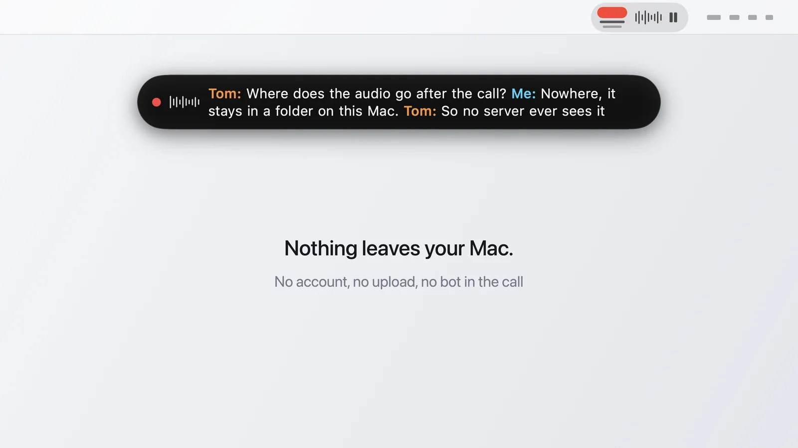

Blog Draft preview
What leaves your Mac when Transcriber records a call
Transcriber privacy in detail. Which network requests the app makes, where audio and transcripts are stored, and what to tell the people on the call.

When Transcriber records a call, the audio and the transcript stay on your Mac. The app makes exactly two kinds of network requests, the download of the transcription models the first time you record and a version check against GitHub, and neither carries any audio or text. This post lists every place your data touches, so you can decide whether that fits your situation, and it ends with the part the app can't take off your hands: telling people they are being recorded.
What does the app send anywhere?
Two things, and both are boring. The first recording downloads the models, about one gigabyte, into the FluidAudio folder under Application Support. You can also trigger that download up front in Settings. Once the files are there the transcription runs without the network, and you can pull the Ethernet cable to prove it.
The second request is the update check. Once a day, or on demand from the menu, the app asks the public GitHub API whether a newer release exists. No token, no account, no identifier beyond what any HTTP request carries. If a new version exists, the app can download and install it, but only if the download is signed by the same identity as the running app.
That is the whole list. No analytics, no crash reporting, no telemetry, no sign-in.
Where do the audio and the transcript live?
In a folder you choose in Settings. Every recording gets its own subfolder named after the date and the title. Inside are the transcript as Markdown, the crash-safe JSONL file, optional JSON and SRT exports, and the raw WAV files if you keep audio. Delete the folder and the recording is gone, there is no copy anywhere else.
The one thing to be aware of is your own sync setup. If the transcripts folder sits inside iCloud Drive, Dropbox or a company share, those services will carry the files wherever they carry everything else. Transcriber doesn't know or care, but you should, especially for calls that fall under a confidentiality agreement.
What about the AI hand-off?
This is the one feature that does move text off the Mac, and it does so only when you press the button. Settings lets you pick a website like Claude, ChatGPT or Perplexity, or a Mac app, together with a prompt template. After a call, Save & Open puts the transcript on the clipboard and opens that tool. From that moment the transcript is subject to whatever that service does with pasted text.
If you don't want that, don't configure an AI tool, or point it at a local app. The recording and transcription parts never depend on it.
What does macOS ask for, and why?
Two permissions on the first run. Microphone, for your side of the call. System Audio Recording, for the other side, because since macOS 14.2 an app needs explicit permission to listen to what other apps play. If you use the automatic paste into an AI app, a third one, Accessibility, is needed for sending the paste keystroke. Each is asked once and remembered as long as the app keeps the same code signature.
The part that stays your responsibility
The app can keep your data on your Mac. It cannot make a recording legal. In Germany, § 201 StGB makes recording a private conversation without consent a criminal offence, and many other countries have comparable rules, some of which require every participant to agree. Because nothing visible joins the call, the other side has no way to notice. Say it at the start, every time, and if someone objects, don't record.
For a description of how the recording itself works, see how Transcriber works, and for the practical side of a recording, the post on recording a Zoom call on a Mac.
Questions people ask
Does the audio ever go to a server?
No. Recording and transcription both happen on your Mac. The audio files stay in the folder you chose, or are deleted after the call if you turned off keeping audio.
Which network connections does the app make?
Two. The one-time download of the transcription models, and a check for new versions against GitHub, once a day by default. Both can be seen in the app log.
Do I need an account?
No account, no login, no email address. Download the app, grant the two permissions, record.
Where are transcripts stored?
In a folder you pick in Settings, one subfolder per recording. Your sync tool decides where they go from there, the app does not upload anything.
Can I use it under GDPR?
The app itself sends no personal data anywhere, which removes the usual processor question. Recording a conversation still needs a legal basis and the consent of the participants, that part is yours.
Is the code public?
Yes, the source is on GitHub, so every claim on this page can be checked against the code.